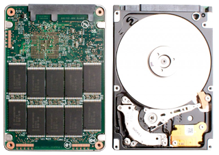

I recently bought a 120GB SSD (yes, a small one) to replace the 500GB HDD in my laptop so I can benefit from the extra speed and just keep my bulk data in the old HDD.
Once your new SSD arrives you are probably very exited, you want that boost up for your system. BUT! You don’t want to reinstall your whole system on it, you want to preserve it right?. Ok let’s do so.
Note: I use Gentoo, but this is perfectly applicable to every distribution.
My current HDD partitioning scheme is like this:
Device Boot Start End Sectors Size Id Type
/dev/sda1 2048 2099199 2097152 1G 83 Swap
/dev/sda2 * 2099200 148899839 146800640 70G 83 Linux
/dev/sda3 148899840 358615039 209715200 100G 83 Linux
/dev/sda4 358615040 976773167 618158128 294.8G 83 Linux- /dev/sda1 is a 1GB swap
- /dev/sda2 is the GNU/Linux system installation (including boot)
- /dev/sda3 is currently unused
- /dev/sda4 is my /home partition with all my data
The partitioning scheme I want for the new SSD would be:
Device Boot Size Id Type
/dev/sda1 1G 83 Swap
/dev/sda2 * 70G 83 Linux
/dev/sda3 50G 83 Linux- /dev/sda1 is a 1GB swap
- /dev/sda2 is the GNU/Linux system installation
- /dev/sda3 is my /home partition (with just the more important data)
This way I can keep my system as it was before, and the new smaller /home will contain the data of daily use. Videos, music, books, etc; Could be used connecting the old HDD with a SATA-USB converter.
Backup
DO NOT remove, nor modify the old HDD partition structure before the system is ported AND tested in the SSD, you don’t want to loose your system or data, do you?
While playing with your storage devices is a good idea to keep a completely separate and isolated backup so your data will survive if you mess something up.
I made a backup for my /home and / partitions using a 1TB external (USB) hard drive like so:
/mnt/
|
+-- alx/ # /home/alx
|
+-- root/ # /
# mount /dev/sdb1 /mnt
# rsync -av --progress /home/axl /mnt/alx/
# rsync -av --progress / /mnt/gentoo/ --exclude /mnt --exclude /home \
--exclude /proc --exclude /tmp --exclude /sys --exclude /devThe -a option will preserve all the meta data your system needs, use it! Now put this hard drive safe in a drawer and don’t touch it until you are completely sure you haven’t loose any data in the process.
Partitioning
You can connect the SSD to another SATA port if you’re using a desktop, but I used a SATA-USB converter.
Using cfdisk the resulting partitioning is:
Device Boot Size Id Type
/dev/sdb1 1G 82 Linux swap / Solaris
/dev/sdb2 * 70G 83 Linux
/dev/sdb3 40.8G 83 LinuxNote that the last partition is actually 40GB and not 50GB, the reason is that the SSD turns out to have ~112GB of usable storage.
Now give the partitions the appropriate file systems:
# mkswap /dev/sdb1
# mkfs.ext4 /dev/sdb2
# mkfs.ext4 /dev/sdb3Migration
Lets mount the future / and migrate the current system to it:
# moutn /dev/sdb2 /mnt
# rsync -av --progress / /mnt/ --exclude /mnt \
--exclude /home --exclude /proc --exclude /tmp \
--exclude /sys --exclude /devNow mount the new /home and copy all the information you need into the new home selectively, but remember to copy all the dotfiles:
# umount /mnt
# mount /dev/sdb3 /mnt
# cp -av /home/alx/.* /mnt
# cp -av /home/alx/<files you need> /mntThen install your bootloader in the SSD, assuming GRUB2:
# umount /mnt
# mount /dev/sdb2 /mnt
# cd /mnt
# mkdir tmp dev proc sys home mnt
# sudo mount --bind /dev /mnt/dev
# sudo mount --bind /proc /mnt/proc
# sudo mount --bind /sys /mnt/sys
# sudo chroot /mnt
# grub2-mkconfig -o /boot/grub/grub.cfg
# grub2-install /dev/sdb
# exitShutdown your system and replace the HDD with the SSD.
Oh boy, this thing is FAST!